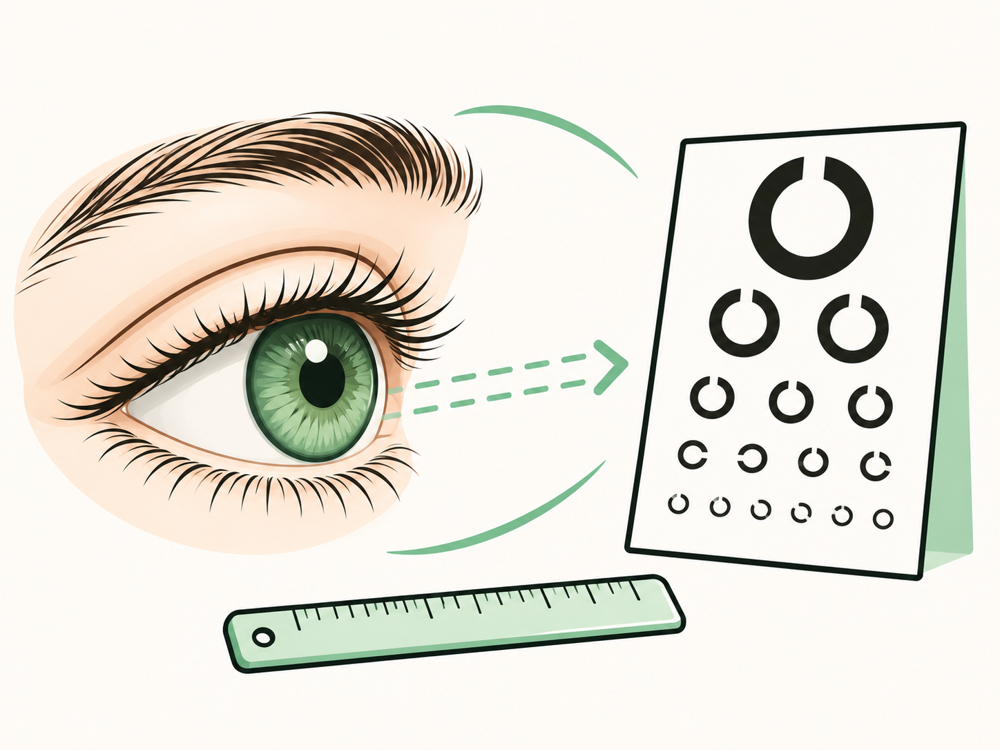

Определение остроты зрения у человека
Острота зрения характеризует способность различать близко расположенные мелкие детали. В работе используется печатная таблица разрывных колец одинакового принципа построения, но разных размеров.

Подготовка таблицы
На таблице изображены кольца Ландольта — знаки в форме кольца с разрывом. Нужно определить, куда направлен разрыв: вверх, вниз, вправо или влево. Размер знаков уменьшается от верхней строки к нижней.
Открыть таблицу PDFСкачать для печатиПараметры печати
Бумага A4, масштаб 100 % / фактический размер. Отключить функции «Подогнать», «Уместить на странице» и изменение масштаба.
Проверка размера
После печати измерить линейкой контрольный отрезок: он должен быть ровно 100 мм. Если длина отличается, исправить настройки и распечатать заново.
Ход работы
Распечатайте таблицу, проверьте контрольный отрезок 100 мм. Разместите лист вертикально на уровне глаз в хорошо освещённом месте без бликов.
Отмерьте расстояние 3 метра от глаз до таблицы. Не сокращайте расстояние при чтении мелких знаков.
Закройте левый глаз непрозрачным листом бумаги, не надавливая на глаз и не зажмуривая его. Правым глазом последовательно называйте направление разрыва каждого кольца, начиная со строки A.
Запишите самую мелкую строку, в которой направления определены правильно: для A — оба знака, для B — все три, для C — не менее трёх из четырёх, для D–F — не менее четырёх из пяти. Результаты сверяйте с ключом только после окончания проверки обоих глаз.
Повторите исследование для левого глаза, закрыв правый, и запишите результат.
Сравните записи двух глаз и сформулируйте вывод. Если используются очки для зрения вдаль, отметьте, выполнялась ли работа в них или без них; сравнивать следует результаты, полученные при одинаковых условиях.
Ключ направлений разрывов — открыть после выполнения
A: вправо, влево
B: вверх, вниз, вправо
C: влево, вправо, вниз, вверх
D: вверх, влево, вниз, вправо, влево
E: вправо, вниз, влево, вверх, вправо
F: вниз, вверх, вправо, влево, вниз
Обозначения A–F напечатаны слева от соответствующих строк.
Результаты и вопросы
Результаты запишите в тетрадь по образцу. Обозначение строки — буква A, B, C, D, E или F; рядом с каждой строкой в PDF указано ориентировочное десятичное значение для расстояния 3 м.
| Глаз | Самая мелкая правильно распознанная строка | Результат |
|---|---|---|
| Правый | Запись в тетради | Значение из PDF |
| Левый | Запись в тетради | Значение из PDF |
Вопросы
- Одинаковы ли результаты для двух глаз?
- Почему каждый глаз исследуют отдельно?
- Почему нельзя определять остроту зрения по произвольно увеличенной таблице на экране?
- Как связана острота зрения со способностью различать мелкие детали?
- Какие условия необходимо соблюдать для корректного сравнения результатов?
Вывод
Сделайте вывод о том, как размер различаемых знаков связан с остротой зрения и совпадают ли полученные результаты для правого и левого глаза. Укажите, почему в этом исследовании необходимо соблюдать одинаковое расстояние и масштаб таблицы.